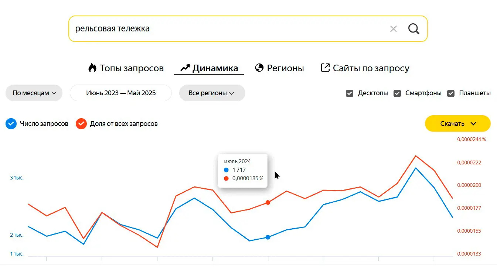
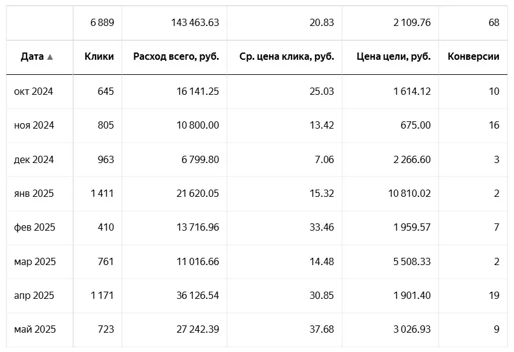
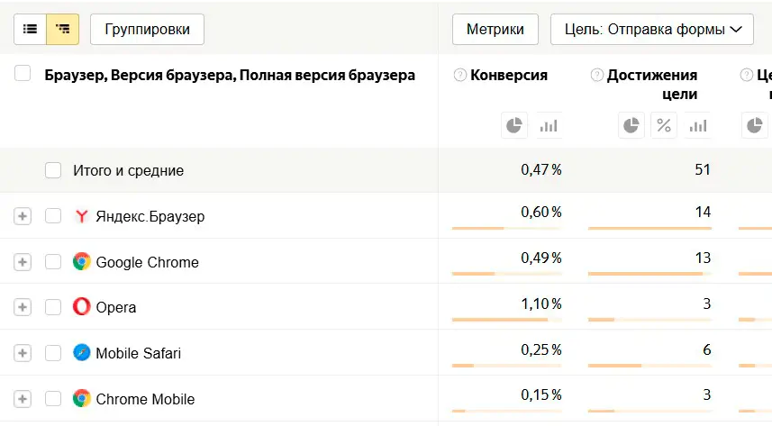
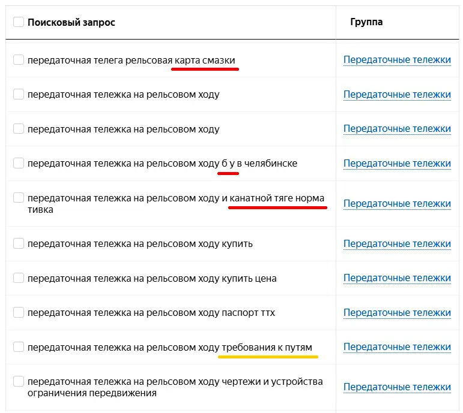
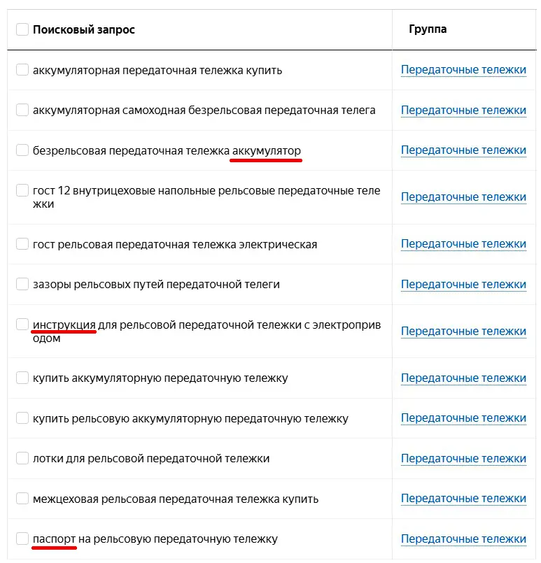
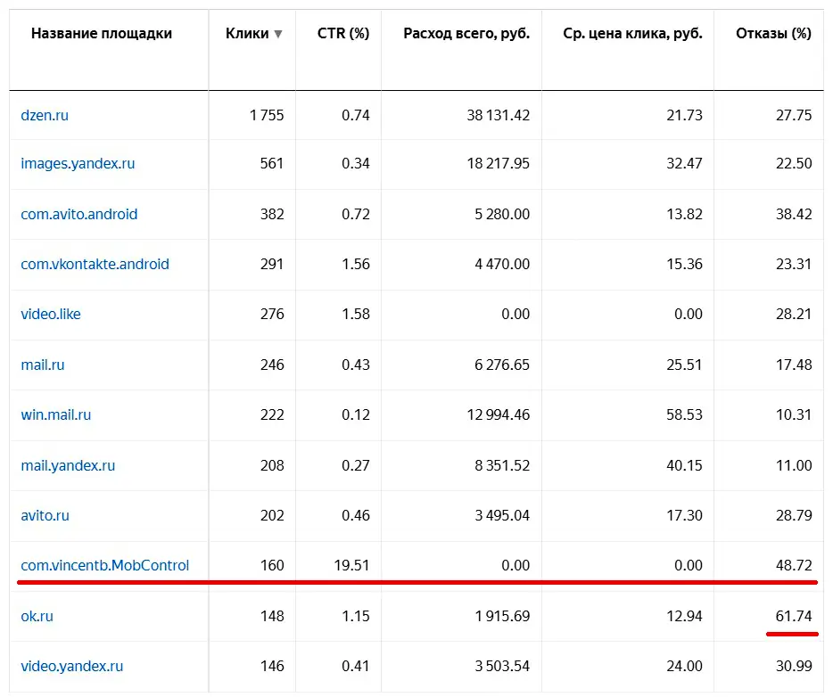
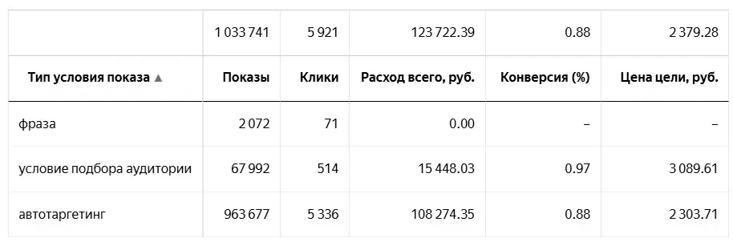
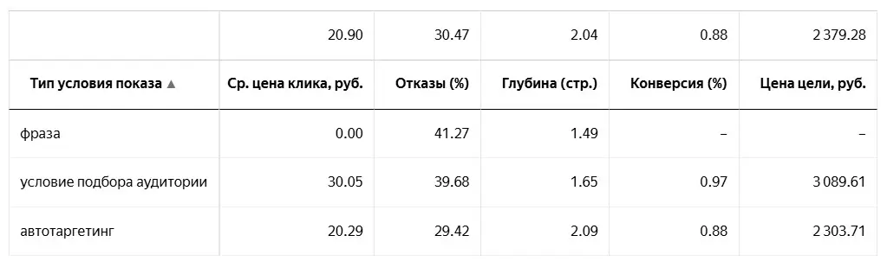

Проект: продвижение промышленных тележек
Компания осуществляла производство электрических, аккумуляторных рельсовых и безрельсовых тележек.
Сначала о рынке и динамике. Количество запросов на тележки год к году растёт. Рынок не самый большой, но относительно стабильный. Стоимость одной тележки составляет от 200 тыс до 2 млн рублей в зависимости от комплектации и тоннажа.
Общая картина по продвижению тележек за весь период:
Самая низкая конверсия ожидалась с IOS и MAC-устройств. В целом, так и получилось, но что действительно удивило, так это то, что из Chrome Mobile конверсия была ещё ниже:
В обязательном порядке был проведён анализ поисковых запросов:
 В целом, нецелевых поисковых запросов было относительно мало. Бывает что их приходится исключать десятками и сотнями, а тут всего несколько штук. Сразу были исключены запросы инструкция и паспорт, т.к. эти люди уже обладают тележками с большой вероятностью. Кроме того, оборудование изготовлено на заказ, а значит, инструкцию и паспорт всегда можно запросить у нас и в сети её не найти.
БУ мы не продаём, а карта смазки тоже относится к запросам обслуживания.
Отдельно можно выделить запросы про пути. Они являются пограничными. Возможно, предприятие готовит пути для тележек или собирается этим заняться, а значит, может являться потенциальным покупателем в будущем. Но может быть пути уже есть и необходим их ремонт, а тележки тоже уже есть.
После анализа запросов настало время анализа площадок в РСЯ:
Некачественные площадки мы будем выявлять с помощью показателей CTR и отказов. Слишком высокий CTR, обычно, свидетельствует о плохом трафике с площадки.
Отказы тоже, чем выше - тем хуже.
Стоит сказать, что по опыту других проектов в металообработке и оборудовании, площадка ok.ru почти всегда отрабатывает неважно. Не изменилась ситуация и в этот раз, потому, эту площадку из показов пришлось удалить.
Анализ условий показа объявлений дал нам следующие данные:
Не специалистам будет сложно прочитать эту табличку, но я поясню:
Отсутствие показов по ключам говорит нам о том, что у нас без разницы какие ключи. Это особенно забавно, учитывая что некоторые заказчики тратят много времени на подбор, согласование ключей и даже заказывают семантическое ядро на стороне. Реальная работа показывает что это довольно бессмысленное занятие.
Автотаргетинг - даёт больше всего конверсий и они по нему наиболее дешёвые. Это хороший знак, значит все компоненты объявления и лендинга работают хорошо.
Условие подбора аудитории - за этим пунктом скрывается сразу много условий показа, такие как LAL, сегменты CRM, интересы. Они дали меньше конверсий и они были чуть дороже.
Вообще, было интересно посмотреть сквозную аналитику до конверсии в оплату заказа и посмотреть сколько заявок из каждого условия показа туда добралось, но это предприятие было небольшое и такой сквозной аналитики у него не было.
В целом, директор предприятия признавал почти все заявки качественными, спама или каких-то нецелевых заявок было по минимуму.
Перестроим эту же таблицу и посмотрим другие параметры:
Теперь нас будет интересовать связь цены клика с качественными параметрами рекламного трафика.
Обычно, чем дороже клик, тем трафик более качественный (по утверждению представителей Яндекса), но на деле это оказывается не всегда так. В данном случае трафик по разным условиям показа стоит практически одинаково, но имеет значительные отличия в качестве и по отказам и по цене конверсии.
На этом всё. Если хотите улучшить рекламные кампании предприятия, или запустить продвижение с нуля, то напишите мне по одному из контактов ниже: